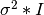
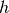
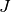
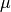
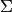
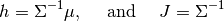

Multivariate Distributions¶
Multivariate distributions are probabilistic distributions whose samples are vectors. The Distributions package implements several commonly used multivariate distributions, including Multinomial, Multivairate Normal and Dirichlet.
Common Interface¶
The methods listed as below are implemented for each multivariate distribution, which provides a consistent interface to work with multivariate distributions.
Computation of statistics¶
- dim(d)¶
Return the sample dimension.
- mean(d)¶
Return the mean vector of distribution d.
- var(d)¶
Return the vector of component-wise variances of distribution d.
- cov(d)¶
Return the covariance matrix of distribution d.
- cor(d)¶
Return the correlation matrix of distribution d.
- entropy(d)¶
Return the entropy of distribution d.
Probability evaluation¶
- pdf(d, x)¶
Return the probability density evaluated at x.
- If x is a vector, it returns the result as a scalar.
- If x is a matrix with n columns, it returns a vector r of length n, where r[i] corresponds to x[:,i] (i.e. treating each column as a sample).
- pdf!(r, d, x)
Evaluate the probability densities at columns of x, and write the results to a pre-allocated array r.
- logpdf(d, x)¶
Return the logarithm of probability density evaluated at x.
- If x is a vector, it returns the result as a scalar.
- If x is a matrix with n columns, it returns a vector r of length n, where r[i] corresponds to x[:,i].
- logpdf!(r, d, x)
Evaluate the logarithm of probability densities at columns of x, and write the results to a pre-allocated array r.
Note: For multivariate distributions, the pdf value is usually very small or large, and therefore direct evaluating the pdf may cause numerical problems. It is generally advisable to perform probability computation in log-scale.
Sampling¶
- rand(d)¶
Sample a vector from the distribution d.
- rand(d, n)
Sample n vectors from the distribution d. This returns a matrix of size (dim(d), n), where each column is a sample.
- rand!(d, x)
Draw samples and output them to a pre-allocated array x. Here, x can be either a vector of length dim(d) or a matrix with dim(d) rows.
Node: In addition to these common methods, each multivariate distribution has its own special methods, as introduced below.
Multinomial Distribution¶
The multinomial distribution generalizes the binomial distribution. Consider n independent draws from a Categorical distribution over a finite set of size k, and let  where X_i represents the number of times the element i occurs, then the distribution of X is a multinomial distribution. Each sample of a multinomial distribution is a k-dimensional integer vector that sums to n.
where X_i represents the number of times the element i occurs, then the distribution of X is a multinomial distribution. Each sample of a multinomial distribution is a k-dimensional integer vector that sums to n.
The probability mass function is given by

Multinomial(n, p) # Multinomial distribution for n trials with probability vector p
Multinomial(n, k) # Multinomial distribution for n trials with equal probabilities
# over 1:k
Multivariate Normal Distribution¶
The multivariate normal distribution is a multidimensional generalization of the normal distribution. The probability density function of a d-dimensional multivariate normal distribution with mean vector μ and covariance matrix Σ is

Three different types of covariances matrices are usually employed in practice:
- Full covariance matrix
- Diagonal covariance matrix
- Isotropic covariance matrix: a special diagonal matrix of which all diagonal elements are the same, i.e.: .
We use three different types to respectively represent multivariate normal distributions of these covariance structures: MvNormal, DiagNormal, and IsoNormal. Internally, these types leverage the positive definite matrix types (PDMat, PDiagMat, and ScalMat) to represent the covariance. These matrix types are provided in the package NumericExtensions.jl for the purpose of handling postive definite matrices of different structures efficiently (see related docs).
# For MvNormal (using full covariance)
MvNormal(mu, C) # multivariate normal distribution with mean mu and covariance C.
# Here, C can be a matrix or an instance of PDMat.
MvNormal(C) # multivariate normal distribution with zero mean and covariance C.
# For DiagNormal (using diagonal covariance)
DiagNormal(mu, C) # diagonal normal distribution with mean mu and covariance C.
# Here, C is an instance of PDiagMat.
DiagNormal(C) # diagonal normal distribution with zero mean and covariance C.
DiagNormal(mu, sig) # diagonal normal distribution with mean mu and a diagonal covariance,
# where all diagonal elements are provided by sig.^2
# sig is a vector of component-wise standard deviation.
# If you know the diagonal elements sig2 (i.e. component-wise variance)
DiagNormal(mu, PDiagMat(sig2))
DiagNormal(PDiagMat(sig2)) # with zero mean
# For IsoNormal (using isotropic covariance)
IsoNormal(mu, C) # isotropic normal distribution with mean mu and covariance C.
# Here, C is an instance of ScalMat.
IsoNormal(C) # isotropic normal distribution with zero mean and covariance C.
IsoNormal(mu, sig) # isotropic normal distribution with mean mu and std.dev. sig
# Here, sig is the component-wise standard deviation (a scalar).
IsoNormal(d, sig) # d-dimensional isotropic normal distribution with zero mean
# and component-wise standard deviation sig.
We also provide a convenient function gmvnormal to construct multivariate normal distributions of different types depending on the input arguments.
gmvnormal(mu, C) # ==> MvNormal, when C is an instance of PDMat or Matrix
# ==> DiagNormal, when C is an instance of PDiagMat or Vector
# ==> IsoNormal, when C is an instance of ScalMat or a real scalar
gmvnormal(C) # multivariate normal distribution with zero mean
# ==> MvNormal, when C is an instance of PDMat or Matrix
# ==> DiagNormal, when C is an instance of PDiagMat
# ==> IsoNormal, when C is an instance of ScalMat
gmvnormal(d, sig) # ==> IsoNormal(d, sig)
Additional interface¶
The following methods are specific to all kinds of multivariate normal distributions.
- invcov(d)¶
Return the inversed covariance matrix of d.
- logdet_cov(d)¶
Return the log-determinant value of the covariance matrix.
- sqmahal(d, x)¶
Return the squared Mahalanobis distance from x to the center of d, w.r.t. the covariance.
When x is a vector, it returns a scalar value. When x is a matrix, it returns a vector of length size(x,2).
- sqmahal!(r, d, x)
Writes the squared Mahalanbobis distances from each column of x to the center of d to r.
Canonical form¶
Multivariate normal distribution is an exponential family distribution, with two canonical parameters: the potential vector  and the precision matrix . The relation between these parameters and the conventional representation (i.e. the one using mean  and covariance ) is:

The canonical parameterization is often more efficient than the conventional representation in Bayesian analysis. We provide several classes to represent Multivariate normal distributions in canonical form. They are MvNormalCanon, DiagNormalCanon, and IsoNormalCanon.
MvNormalCanon(h, J) # potential vector h and precision matrix J (PDMat or Matrix)
MvNormalCanon(J) # zero potential and precision matrix J (PDMat or Matrix)
DiagNormalCanon(h, J) # potential vector h and precision matrix J (PDiagMat or Vector)
DiagNormalCanon(J) # zero potential and precision matrix J (PDiagMat or Vector)
IsoNormalCanon(h, J) # potential vector h and precision matrix J (ScalMat)
IsoNormalCanon(J) # zero potential and precision matrix J (ScalMat)
IsoNormalCanon(mu, prec) # potential vector h and component-wise precision value prec
IsoNormalCanon(d, prec) # zero potential (dim = d) and component-wise precision value prec
# Note: prec = inv(sig^2).
All methods for multivariate normal distributions (including the additional interface above) are implemented in an efficient way for all these types using canonical forms.
Type system for Multivariate normal distributions¶
Under the hood, we have a type system that underlies these rich representation of multivariate normal distributions.
First, we have an abstract type AbstractMvNormal as the base type. For those using conventional representation, we define:
immutable GenericMvNormal{Cov<:AbstractPDMat} <: AbstractMvNormal
typealias MvNormal GenericMvNormal{PDMat}
typealias DiagNormal GenericMvNormal{PDiagMat}
typealias IsoNormal GenericMvNormal{ScalMat}
.
For those using canonical form, we define:
immutable GenericMvNormalCanon{Prec<:AbstractPDMat} <: AbstractMvNormal
typealias MvNormalCanon GenericMvNormalCanon{PDMat}
typealias DiagNormalCanon GenericMvNormalCanon{PDiagMat}
typealias IsoNormalCanon GenericMvNormalCanon{ScalMat}
.
Leverging this type system, the multiple dispatch mechanism of Julia, as well as the computational support of the NumericExtensions package on positive definite matrices, we managed to provide this rich representation while ensuring that we take the most efficient computational routines for each particular type.
Dirichlet Distribution¶
The Dirichlet distribution is often used the conjugate prior for Categorical or Multinomial distributions. The probability density function of a Dirichlet distribution with parameter  is
is

# Let alpha be a vector
Dirichlet(alpha) # Dirichlet distribution with parameter vector alpha
# Let a be a positive scalar
Dirichlet(k, a) # Dirichlet distribution with parameter a * ones(k)